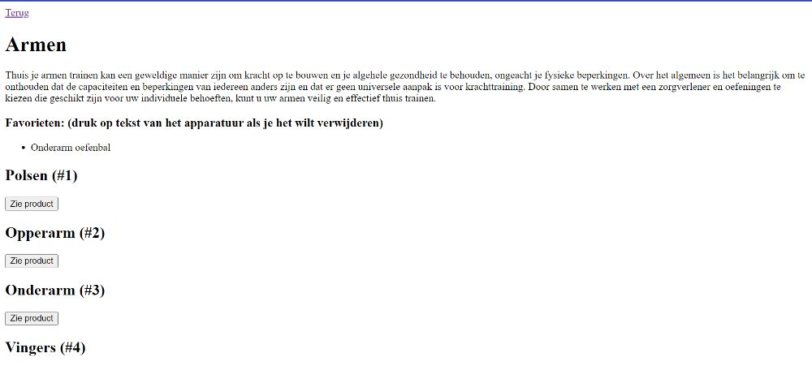

Welkom op mijn portfolio website!!!
Wie ben ik?

Mijn naam is Aswan Kotalh. Ik ben een 20 jarige Somalische dame. Ik heb 3 jaar programmeer ervaring. Mijn huidige opleiding is CMGT (Creative Media & Game Technologie). Mijn vorige MBO opleiding was Applicatie-en Mediaontwikkelaar. De reden waarom ik voor beide opleidingen heb gekozen is omdat ik graag wil leren hoe je games en hele coole websites kunt bouwen. Zie hieronder wat mijn skills zijn.
Skills
Mijn hobbies:
- Ik speel al 6 jaar lang de piano. Ik krijg er rust van en heb soms concerten. Het is alleen een hobby en ik ben niet van plan om het groter dan dat te maken.
- Zelf speel ik ook veel games. Zoals Splatoon 3, Mario Kart, Advent Neon en veel Sonic games
- Ik ben al sinds jongs een artiest. Alleen teken ik zelf karakter designs voor mijzelf. Ik ben niet van plan om dit een baan van te maken.
Piano
Gamen
Tekenen
Wat ik wil leren:
- De reden waarom ik op deze opleiding en die van mijn MBO koos was omdat ik graag wil leren hoe je games maakt. Ik vond het altijd heel interessant hoe de process van het maken van spellen ging. Zelf hoop ik graag ooit een game te bouwen.
- In mijn eerste periode van CMGT gingen wij een robotje bouwen van hout. Dit was een hele leuke ervaring en ik hoop graag meer van te leren in de toekomst.
Games maken
Robots bouwen
Mijn CLE projecten:
- CLE Robot (Periode 1) Mijn CLE robotje die ik had gemaakt tijdens de eerste periode samen met mijn teamgenoten. Het is een robotwekkertje die rijdt alt je wekker aangaat zodat je gaat opstaan om het uit te zetten. Het project was heel leuk om aan te werken.
- Sport website voor motorische beperkte mensen (Periode 3) Een pagina van de website die ik samen met een team heb gebouwd. Dit was een website gebouwd voor mensen met een motorische beperking die graag meer willen weten over sport. Deze pagina is puur Javascript, HTML en CSS. Het was niet een hele moeilijke ervaring. 

Reserveringsysteem (Periode 2)
Mijn Reserveringsysteem die ik heb gemaakt in periode 2 Dit was een uitdaging om advanced te progammeren, maar het was het waard en ik zekers wat nieuws geleerd.